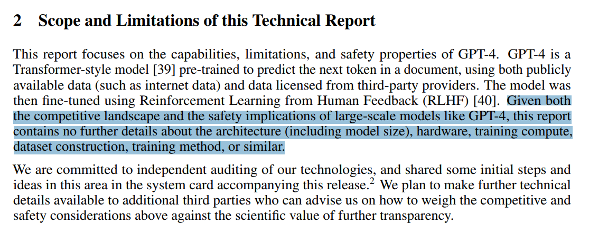
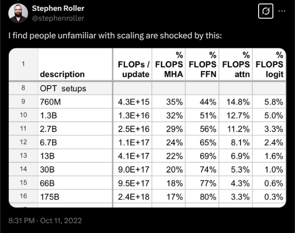
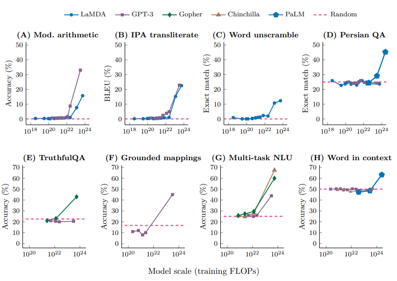
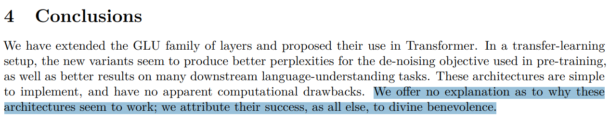
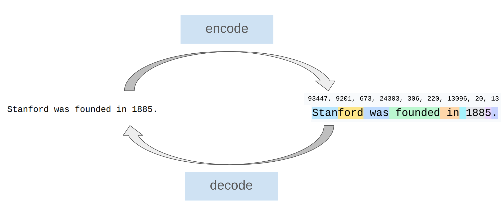
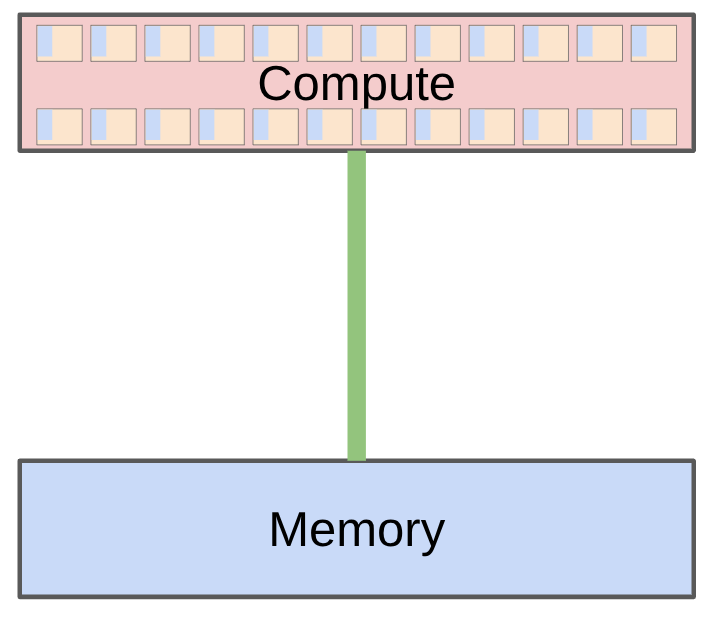
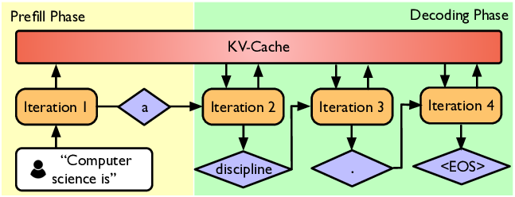
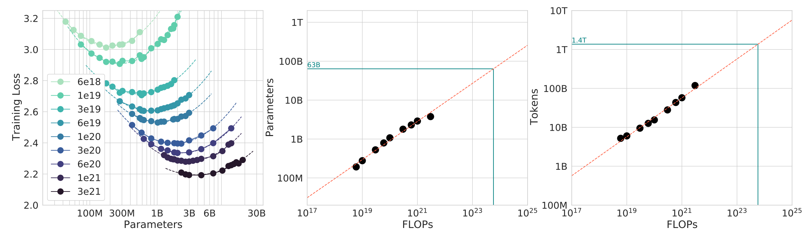

这是一份从 Python 可执行讲义直接渲染的阅读版笔记。沿着章节阅读，文中的论文、视频和课程资料链接会在新标签页打开。
……为大家带来 CS336 的第三次开课。
第二次开课（2025 年春季）的讲课视频在 YouTube 上。
有什么新变化？
- 沿用同样的'从零开始'理念
- 优先讲解性价比最高的概念，不要只见树木不见森林
- 更多地覆盖现代语言模型的组成部分（专家混合、长上下文、智能体）
我们为什么要开设这门课程？
问题：研究者们正在与底层技术脱节。
- 2016 年：研究者自己实现并训练模型。
- 2018 年：研究者下载模型（例如 BERT）并进行微调。
- 今天：研究者对 API 模型（例如 GPT/Claude/Gemini）进行提示。
向更高层次的抽象迈进提升了生产力，但是
- 这些抽象是存在泄漏的（与编程语言或操作系统不同）。
- 仍然有一些基础研究需要拆开整个技术栈才能完成。
要进行基础研究，就必须完整理解这项技术。
本课程的理念：通过构建来理解。
但有一个小小的问题……
语言模型的工业化

前沿模型非常昂贵：
前沿模型是如何构建的，没有任何公开细节。

前沿模型对我们来说是遥不可及的。
我们可以构建小型语言模型（<10 亿参数），但这可能无法代表大型语言模型。


我们在这门课上学到的东西，哪些能迁移到前沿模型上？
知识分为三种类型：
- 机制：事物如何工作（Transformer 是什么、模型并行如何运作）
- 思维方式：榨干硬件的每一分性能，认真对待规模扩展
- 直觉：哪些数据和建模决策能带来良好的准确率
我们可以教授机制和思维方式（这些是可以迁移的）。
我们只能部分教授直觉（不一定能跨规模迁移）。
直觉？🤷
有些设计决策根本无法（尚无法）从道理上论证，纯粹来自实验。

苦涩的教训（The ?? ??）
错误解读：规模就是一切，算法不重要。
正确解读：能够随规模扩展的算法才是重要的。
准确率 = 效率 x 资源
事实上，规模越大，效率越重要（浪费不起）。
一个思考框架：在给定的算力和数据预算下，能构建出的最好模型是什么？
换句话说，最大化效率！
前神经网络时代（2010 年代之前）
神经网络成分（2010 年代）
早期基础模型（2010 年代末期）
拥抱规模扩展
开放模型
早期尝试（尝试复现 GPT-3）：
可信的开放权重模型（权重 + 论文）：
这些模型正在逼近闭源模型（GPT、Claude、Gemini 等）。
开源模型（权重 + 论文 + 代码 + 数据）：
正是开放模型带来的思想让我们得以教授 CS336。
什么是语言模型？
- 2018 年（BERT）：一个用来微调的东西
- 2020 年（GPT-3）：一个用来提示的东西
基本原理是不变的（注意力、内核、优化）。
只是规格不同（上下文更长，推理效率更加重要）。
这是一个可执行讲义（executable lecture），一个通过运行来呈现讲义内容的程序。
可执行讲义让我们可以：
- 查看并运行代码（因为一切都是代码！）
- 查看讲义的层级结构
这是一门 5 学分的课程。
2024 年春季课程评价中的一条评论：
> 整个作业的工作量大致相当于 CS 224n 全部 5 次作业加上期末项目的总和。而这仅仅是第一次作业。
你为什么应该选这门课
- 你有一种执念，想要彻底理解事物是如何运作的。
- 你想锻炼你的研究工程能力。
你为什么不应该选这门课
- 你这个季度其实想做出研究成果。（去和你的导师聊聊。）
- 你想学习 AI 中最热门的新技术（例如多模态、RAG 等）。（你应该去上研讨课。）
- 你想在自己的应用领域取得好效果。（你应该直接提示或微调现成的模型。）
如何在家自学跟上进度
- 所有讲义材料和作业都会发布在网上，欢迎自学。
- 课程通过 CGOE 录制。
作业
- 5 次作业（基础知识、系统、缩放定律、数据、对齐）。
- 没有脚手架代码，但我们提供单元测试和适配器接口，帮助你检查正确性。
- 先在本地实现以测试正确性，然后在集群上运行进行基准测试（准确率和速度）。
- 部分作业设有排行榜（在给定训练预算下最小化困惑度）。
AI 使用政策
- 编程智能体可以解出所有作业，但你什么也学不到。
- AI 在回答问题和辅导方面可以非常有用。
- 你必须使用我们提供的 AGENTS.md 文件，它要求 AI 以教学为导向。
- 请阅读我们的 AI 使用政策指南。
算力
目标：能够训练一个基础语言模型
组成部分：分词、模型架构、训练
分词
模型操作的基本单元是什么？
形式化地说：分词器在原始输入（字节）和整数序列（token）之间进行转换

直觉：把输入切分成频繁出现的块
效率视角
- 缩短上下文长度（1000 字节 → 约 250 个 token）
- 自适应计算（在输入中有趣的部分投入更多建模容量）
这些方法很有前景，但尚未扩展到前沿规模。
模型架构
各项改进：
- 形状（隐藏维度、深度、头数、专家数）
训练
如何设置模型的参数？
- 正则化（例如 dropout、权重衰减）
作业 1（基础知识）
- 实现 BPE 分词器
- 实现 Transformer、交叉熵损失、AdamW 优化器、训练循环
- 进行资源核算
- 在 TinyStories 和 OpenWebText 上训练
高层原则：一切都是为了平衡以下三者：
- 表达能力（能表示数据中的复杂依赖关系）
- 稳定性（让参数和梯度范数保持在恰到好处的区间）
- 效率（在硬件上跑得快，训练和推理都是）
目标：榨干硬件（GPU 或 TPU）的性能
组成部分：内核、并行、推理
基础
- 资源核算：模型的内存和计算特性

- 模型参数必须从内存（HBM）搬到计算单元（SM）
- 例：B200 在 bf16 下可进行 2.25 PFLOP/秒的运算，内存带宽为 8TB/秒
- Roofline 分析：弄清楚我们究竟受算力约束还是受内存约束
- 基准测试与性能分析（nsight）：看看实践中到底发生了什么

内核
- 内核是在 GPU 上运行的函数
- 使用 PyTorch 时，每个基础算子都会启动一个标准内核
- 可以编写自定义内核让 GPU 飞起来
- 原则：组织计算以最小化数据搬运
- 朴素做法：读 HBM；计算 A；写 HBM；读 HBM；计算 B；写 HBM
- 融合做法：读 HBM；计算 A 和 B；写 HBM
- 策略：算子融合（矩阵乘法 + 激活函数）、分块（FlashAttention）
- Warp 分支发散、内存合并访问、bank 冲突、占用率、批量异步内存传输
- 用 CUDA/Triton/CUTLASS/ThunderKittens 编写内核
并行
- 如果我们有 1024 块 GPU 呢？
- GPU 之间的数据搬运更慢，但'最小化数据搬运'的原则依然成立
- 使用经典的集合通信操作（例如 gather、??、??-??）
- 将内存（参数、激活值、梯度、优化器状态）分片到多块 GPU 上
- 如何切分计算：{数据、张量、流水线、序列、专家}并行
推理
目标：根据提示生成 token（真正使用模型时必需！）
强化学习、测试时计算、评估也需要推理
两个阶段：prefill（预填充）和 decode（解码）

- Prefill（与训练类似）：token 是给定的，可以一次性全部处理（受算力约束）
- Decode：需要一次生成一个 token（受内存约束）
加速解码的方法：
- 使用更便宜的模型（通过模型剪枝、量化、蒸馏）
- 投机解码：用更便宜的"草稿"模型生成多个 token，再用完整模型并行打分（精确解码！）
- 系统优化：融合内核、连续批处理
作业 2（系统）
- 用 Triton 实现融合的 RMSNorm 内核
- 实现分布式数据并行训练
- 实现优化器状态分片
- 对实现进行基准测试和性能分析
- 在概念层面清晰地讲解了如何构建 LLM 系统
- 出自 Google，以 TPU 为主，但高层概念是相通的
背景：如果你有 1e25 FLOPs 的算力，你会用哪些超参数来训练一个好模型？
在全规模下做超参数调优太贵了！
关键的概念转变：不要只考虑单一规模，而是想一个缩放配方（?? recipe，FLOPs → 超参数）
对于一个缩放配方：
- 做实验，在多个较小规模下计算损失（例如最高到 1e24 FLOPs）
- 拟合一条缩放定律，预测该缩放配方在目标规模下的损失（例如 1e25 FLOPs）
现在你可以：
1. 利用小规模实验来优化面向更大规模的缩放配方
2. 在真正跑实验之前，就预测出目标规模下的损失！
缩放定律不会自动出现，需要精心构造缩放配方。
可预测性至少与最优性同等重要！
问题：给定 FLOPs 预算（C = 6 N D），应该用更大的模型（N）还是在更多 token 上训练（D）？
- ISOFLOP 曲线：对多个较小的 FLOPs 预算，找出最优的 N
- 然后拟合缩放定律，外推到大的 FLOPs 预算

一句话结论：D = 20 N 大致最优（例如 70B 参数模型应在约 1.4T token 上训练）
注意：这没有考虑推理成本（此时更想要较小的模型）

本周应该就能训练完成，到时候看看我们能多好地匹配预先注册的损失！
作业 3（缩放定律）
- 我们基于以往的运行定义一个训练 API（超参数 → 损失）
- 提交"训练任务"（在 FLOPs 预算内）并收集数据点
- 对数据点拟合缩放定律
- 提交外推的超参数和损失预测
- 排行榜：在给定 FLOPs 预算下最小化损失
问题：我们希望模型具备哪些能力？
多语言？擅长对话？智能体编程能力？
评估
评估的目的是什么？
1. 内部：指导模型开发（跨规模的平滑性、相对性能重要）
2. 外部：衡量真实用例的绝对质量（生态效度重要）
评估示例：
1. 困惑度：最好在私有文档上运行，而不是互联网上的（避免数据污染）
2. 高级用例：GPQA、HLE、SWE-Bench、Terminal-Bench
语言模型是通用的，因此需要多样化的评估集！
数据收集
- 数据不会从天上掉下来。
- 来源：从互联网爬取的网页、书籍、arXiv 论文、GitHub 代码等。

- 原始数据是 HTML、PDF、目录（而非文本），需要处理
数据处理
- 转换：把 HTML/PDF 转成文本（提取正文）
- 过滤：保留高质量数据，去除有害内容（借助分类器）
- 去重：节省算力，避免记忆化；使用布隆过滤器或 MinHash
数据的类型：
- 预训练数据：大规模且多样
- 中期训练数据：高质量，包括长上下文
- 后训练数据：监督微调（对话、带工具调用的智能体轨迹）
作业 4（数据）
- 把 ?? ?? 的 HTML 转成文本
- 训练分类器，过滤质量和有害内容
- 用 MinHash 去重
- 排行榜：在给定 token 预算下最小化困惑度
到目前为止，我们在完全监督下训练模型（预测下一个 token）。
现在模型已经比较像样了，我们可以从弱监督进一步改进它。
为什么用弱监督？因为评价一个东西往往比生成它更容易。
基本模板：
1. 让模型生成回复。
2. 用{人类、验证器、LM 裁判}给回复打分。
3. 更新模型，使其偏好更好的回复。
算法：
挑战：
- RL 算法不稳定且难以调参
- 在大规模下，这需要大量新基础设施（异步 rollout 的推理）
- 需要不断在系统效率与在策略（?-policy）程度之间做权衡
作业 5（对齐）
- 实现直接偏好优化（DPO）
- 实现组相对偏好优化（GRPO）
记住，一切的核心都是效率：
- 资源：数据 + 硬件（算力、内存、通信带宽）
- 在固定的资源下，如何训练出最好的模型？
如今，我们受限于算力，因此各种设计决策都体现着如何榨干给定硬件的性能。
- 系统：显然与效率有关
- 分词：直接处理原始字节很优雅，但在当今的模型架构下计算效率低
- 模型架构：许多改动都是为了减少内存或 FLOPs（例如共享 KV 缓存、滑动窗口注意力）
- 数据过滤：避免把宝贵的算力浪费在糟糕/无关的数据上
- 缩放定律：用更少的算力在小型模型上做超参数调优
明天，我们将变为受数据约束……
原始文本通常表示为 Unicode 字符串。
语言模型在 token 序列上定义概率分布（通常用整数索引表示）。
所以我们需要一个把字符串编码为 token 的过程。
我们还需要一个把 token 解码回字符串的过程。
观察
- 一个单词及其前面的空格属于同一个 token（例如 " world"）。
- 同一个词在开头和中间的表示不同（例如 "hello hello"）。
- 数字每几位被切成一个 token。
下面是 OpenAI 的 GPT-5 分词器（tiktoken）的实际效果。
验证 encode() 和 decode() 可以往返还原：
压缩比：每个 token 对应的字节数
压缩比越大，序列越短（这是好事，因为注意力对序列长度是平方级的）。
可以通过增大词表规模来提高压缩比（可能的 token 取值增多），但这会导致稀疏性。
Unicode 字符串是 Unicode 字符的序列。
每个字符可以通过 ord 转换为码点（整数）。
也可以通过 chr 转换回来。
现在我们来构建一个 Tokenizer，并确保它能往返还原：
问题 1：词表非常庞大。
问题 2：很多字符相当罕见（例如 🌍），对词表的利用效率很低。
这个分词器集两家之短（词表大，压缩比又低）。
Unicode 字符串可以表示为字节序列，每个字节可由 0 到 255 之间的整数表示。
有些 Unicode 字符只用一个字节表示：
另一些则需要多个字节：
现在我们来构建一个 Tokenizer，并确保它能往返还原：
词表非常小巧：一个字节可以表示 256 个值。
那压缩比呢？
压缩比很糟糕，这意味着序列会太长。
考虑到 Transformer 的上下文长度有限（注意力是平方级的），这看起来不太妙……
另一种方法（更接近传统 NLP 的做法）是把字符串切分成单词。
这个正则表达式把所有字母数字字符保持在了一起（单词）。
要把它变成一个 Tokenizer，我们需要把这些块映射成整数。
然后，我们可以建立从每个块到整数的映射。
好处：每个 token 都是有意义的（毕竟单词是人类发明的）。
压缩比不错，但词表规模可能非常巨大。
此外：
- 很多词很罕见，模型从中学不到多少东西。
- 这种方法显然无法提供固定的词表规模。
- 训练时没见过的新词会被赋予特殊的 UNK token，这很丑陋，还会扰乱困惑度的计算。
字节对编码（BPE）
(在此之前的论文都使用基于单词的分词。)
基本思想：在原始文本上训练分词器，构建一个为数据量身定制的词表。
直觉：常见的字节序列用单个 token 表示，罕见的序列用多个 token 表示。
概要：从每个字节作为一个 token 开始，反复合并最常出现的相邻 token 对。
训练分词器
使用分词器
现在，给定一段新文本，我们就可以对其进行编码。
在作业 1 中，你将在以下几个方面超越这个实现：
- encode() 目前会遍历所有合并规则。只需遍历真正相关的合并规则。
- 检测并保留特殊 token（例如 <|endoftext|>）。
- 使用预分词（例如 GPT-2 分词器的正则表达式）。
- 尽量让实现跑得尽可能快。
总结：
- 分词器：字符串 ↔ token（整数索引）
- 基于字符、字节、单词的分词都是很不理想的
- BPE 是一种有效的、数据驱动的启发式方法
- 分词目前是独立的步骤，也许有一天能从字节开始端到端完成……
但无论什么方案都需要满足：
1. 模型（例如 Transformer）应该在序列（文本、视频、DNA 等）的块（抽象单元）上操作
2. 块应该是可变长度的（给有趣的块分配更多模型容量）
下节课：资源核算